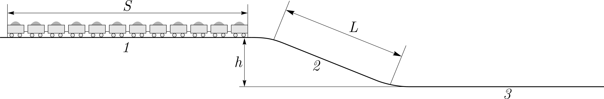
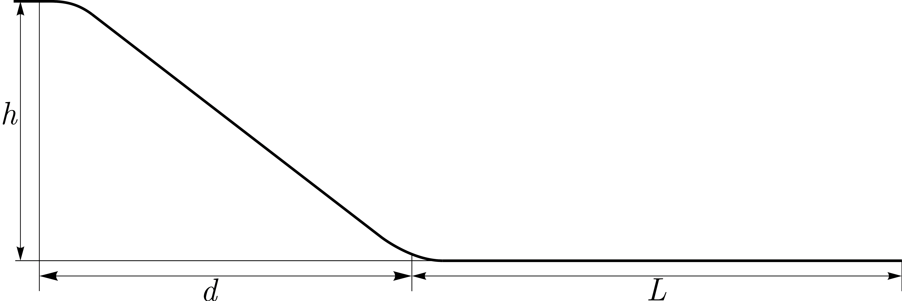
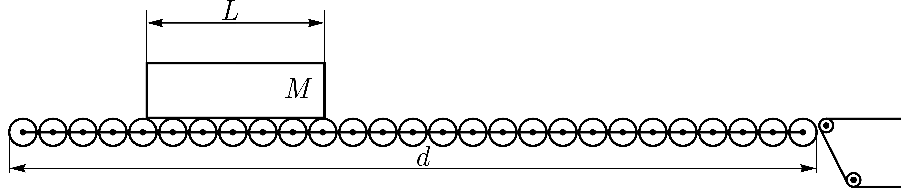
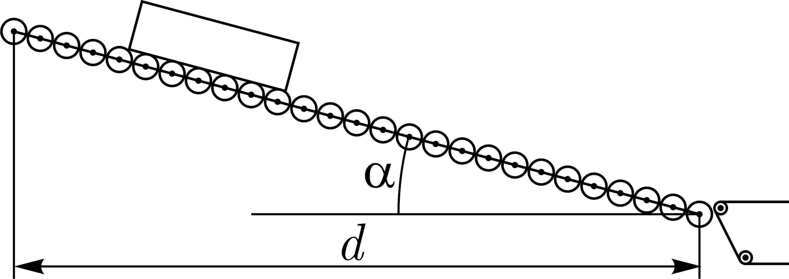

X16 (2016) — English translation
The railway section consists of 3 sections: the 1st and 3rd sections are horizontal, and the 3rd is located below the 1st at $h$. The second section, located between the 1st and 3rd, has a constant slope. The length of the 2nd section is $L$ (Fig. 1). The connections between sections are smooth (no shocks).

A train of cars with length $S$ ($S > L$) followed along the stretch, moving from afar by inertia. The lengths of the 1st and 3rd sections are significantly longer than $S$. The friction acting on the train is negligible, the mass of the train is distributed evenly along its length, and the length of the car is much less than $L$. While the train was completely in the 1st section, its speed was $v$.
An ice cube slides down from a high straight slide of height $h = 30~\text{м}$. Having driven along the curve, which is much smaller in size than the size of the slide and comparable to the size of the ice cube, it travels horizontally for another $L = 60~\text{м}$. The trajectory of the ice cube in the rounding section is an arc of a circle of small radius (Fig. 2). The horizontal distance from the projection of the top of the slide to the beginning of the horizontal section $d = 40~\text{м}$.

Hint: You may end up with an equation for $\mu$ that cannot be solved analytically. Figure out how to determine $\mu$ to two significant figures.
In the airport control area in front of the conveyor belt there is a panel with cylinders that can rotate freely about their axis (Fig. 3). A box of mass $M$ and length $L$ moves along solid cylinders of mass $m$ ($m \ll M$) and radius $r$ ($r \ll L$), which are located very close to each other, but do not touch each other. Horizontal distance between the conveyor belt and the beginning of the panel $d$ ($d \gg L$).

Calculate the average force against the box's motion (the component of the force directed against the speed of the box) for a horizontal panel. Calculate the time it takes for the box to move along the horizontal panel if it was launched at the initial speed. Now consider a longer panel installed at an angle $\alpha$ to the horizon, and the distance $d$ has not changed (Fig. 4). The box begins to move from rest. Consider that, since $d \gg L$, steady state (if possible) is reached quickly. At what angle $\alpha$ will the time of movement of the box be minimal?

Source: https://pho.rs/p/4002